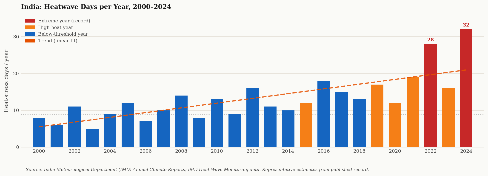
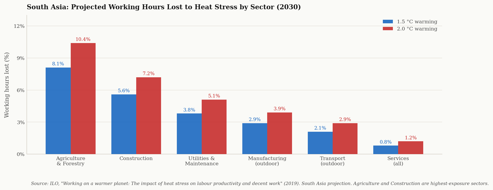
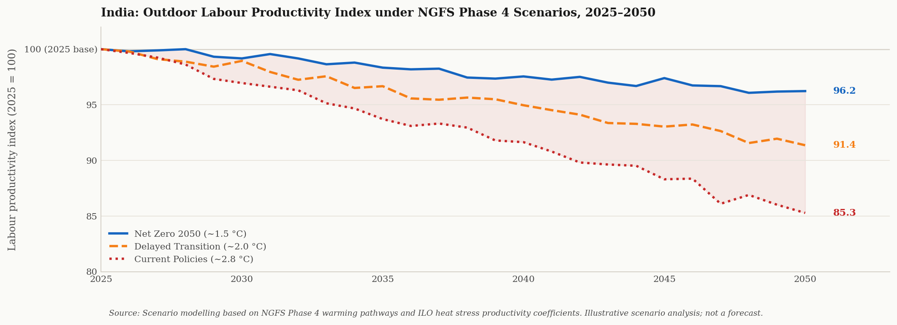

On 29 May 2024, the India Meteorological Department recorded temperatures above 45°C across large parts of Rajasthan, Uttar Pradesh, and Haryana simultaneously. IMD Heat Watch 2024 Heat-related deaths were reported in Delhi, Odisha, and Bihar. Schools were shut. Outdoor construction work in several cities ceased by 10am. The NDMA issued advisories across eleven states. NDMA 2024
None of this appeared in any quarterly earnings model for an Indian FMCG company, real estate developer, or agricultural lender. The loss was invisible — not because it was small, but because the analytical frameworks used by most financial institutions do not have a systematic method for converting atmospheric temperature into financial output.
This article builds that method. It traces the physical mechanism by which extreme heat suppresses labour output, maps the six financial transmission pathways into which that suppression flows, and uses ILO and NGFS Phase 4 data to quantify what the loss looks like under three warming scenarios through 2050. ILO 2019 NGFS Phase 4
90%+
India's workforce in the informal sector — no cooling, no paid leave, no health protection
PLFS 2022–23, Ministry of Statistics
5.3%
Working hours South Asia will lose annually to heat stress by 2030 under current warming trajectory
ILO, "Working on a warmer planet" (2019)
35°C
Wet-bulb temperature at which sustained outdoor labour becomes physiologically impossible, even with hydration
IPCC AR6 WGII Ch. 16; Sherwood & Huber (2010)
The Physical Mechanism: Why Heat Kills Productivity Before It Kills Workers
The human body maintains a core temperature of approximately 37°C. When ambient temperature and humidity rise, the body diverts blood flow from muscles to the skin surface to facilitate cooling through sweating. IPCC AR6 WGII Ch.16 Physical work capacity falls. Reaction time slows. Decision-making degrades. At moderate heat stress — a wet-bulb globe temperature (WBGT) above 28°C — outdoor workers operating at moderate intensity lose an estimated 50 percent of their sustainable work capacity. ILO 2019: WBGT >28°C → 50% capacity loss at moderate work rate
Wet-bulb temperature is the critical threshold. Unlike standard temperature, wet-bulb temperature accounts for humidity: it is the lowest temperature a surface can reach through evaporative cooling. At a wet-bulb temperature of 35°C, the human body cannot cool itself even in full shade with unlimited hydration. Sherwood & Huber, PNAS 2010 No amount of rest prevents core temperature from rising toward dangerous levels. Work must stop — or the worker dies.
Source — IPCC AR6 Working Group II, Chapter 16 (Key Risks)
"Heat stress is among the most broadly impactful physical climate hazards for human health and labour productivity."
"Labour productivity losses from heat stress are projected to increase non-linearly with warming. At 1.5°C, global losses reach approximately 2.2 percent of working hours. At 2.0°C, they reach 3.8 percent. The losses are geographically concentrated in tropical regions and sectors with high outdoor exposure — agriculture, construction, utilities, and informal manufacturing."

India: Heatwave days per year, 2000–2024. Red bars mark record or near-record years. The upward trend is consistent with IMD's documented increase in extreme heat frequency across northwest, central, and peninsular India. Source: IMD Annual Climate Reports.
Source — IMD Annual Climate Summary and Heat Wave Reports
India's heatwave footprint is expanding in both intensity and geographic reach.
"The northwest, central, and eastern India regions have experienced a statistically significant increase in heatwave frequency and duration since 1950. The 2022 northwest India heatwave — the earliest on record, peaking in late March — demonstrated that heat stress now arrives before the traditional May-June season that agricultural and construction calendars assume. In 2024, peak temperature anomalies extended into Odisha, Bihar, and parts of the northeastern corridor simultaneously."
Who Bears the Cost: India's Informal Workforce
India's Periodic Labour Force Survey (PLFS) for 2022–23 records that more than 90 percent of India's employed workforce is in informal employment. PLFS 2022–23 This means: no employer-provided health insurance, no air-conditioned workspace, no paid sick leave, and no access to workers' compensation when heat forces a day off. The productivity loss that heat imposes on this population does not appear on any corporate balance sheet. It appears — much later, and less visibly — in agricultural credit NPA ratios, rural consumer demand figures, and informal sector output indices. RBI FSR 2023
The sectoral exposure is not uniform. Agriculture employs an estimated 600 million people across rural India, including household members dependent on farm income. PLFS 2022–23 Kharif cultivation — rice, cotton, maize, soybean — peaks in June through August, exactly the window of highest heat-humidity combination in the Indo-Gangetic Plain. Construction employs approximately 60 to 65 million workers. ILO 2019: Construction sector loses 5.6% of working hours at 1.5°C warming Both sectors are dominated by daily-wage labour — workers who are paid only when they work, and who cannot afford to stop.
"The worker who stops when it is 47°C does not file a productivity report. The loss accumulates invisibly — in informal incomes, in food output, in rural demand — until it reaches a balance sheet many steps removed from the original temperature."

South Asia: Projected working hours lost to heat stress by sector, 2030. Agriculture and construction carry the highest exposure at both 1.5°C and 2.0°C warming. India drives the majority of the South Asia total. Source: ILO, "Working on a warmer planet" (2019).
Source — ILO, "Working on a warmer planet: The impact of heat stress on labour productivity and decent work" (2019)
South Asia is the most exposed region in the world to heat-related working hour losses.
"By 2030, South Asia is projected to lose approximately 5.3 percent of total working hours annually to heat stress — the highest regional exposure globally. India accounts for the largest share of this loss in absolute terms, driven by its agricultural workforce size, dominant informal sector, and geographic overlap between peak temperature zones and peak working populations. Agriculture loses an estimated 8.1 percent of working hours at 1.5°C warming and 10.4 percent at 2.0°C."
Six Financial Transmission Pathways
Heat stress does not stop at the individual worker. It moves through the economy along six pathways that are distinct in their financial character but simultaneous in their occurrence.
-
1
Agricultural Output Compression FAO · IMD
Kharif crops cultivated at heat-humidity conditions above WBGT thresholds produce lower yields regardless of rainfall adequacy. High night-time temperatures during grain-filling stages of rice — a documented and measurable phenomenon IPCC AR6 WGII Ch.5: 10% rice yield loss per 1°C night temp rise above threshold — permanently suppress output per hectare. This transmission moves from atmospheric temperature into FCI procurement volumes, MSP pressure, and eventually food inflation that the RBI must respond to through monetary policy.
-
2
Agricultural Credit NPA Pressure RBI FSR
Informal daily-wage farm labour that loses income during peak heat periods cannot service agricultural input loans. Scheduled commercial bank NPA ratios in the agriculture segment have documented sensitivity to both monsoon deficit and temperature anomaly years. RBI Financial Stability Report June 2023 NPA sensitivity to heat stress not yet systematically modelled by Indian banks The failure to systematically embed heat stress into agricultural credit underwriting means NPA risk is systematically underpriced in this segment.
-
3
Construction Sector Output and Real Estate Developer Credit NHB · CRISIL
Construction activity halts during peak heat periods. The 2024 NDMA heat action advisories explicitly cited construction worker safety as the trigger for work stoppages in Delhi NCR, Rajasthan, and UP. NDMA 2024 Project timelines extend. Completion schedules slip. Real estate developer cash flows — already compressed from delayed collections — face additional compression from heat-forced delays. Lenders holding construction finance exposure bear the credit consequence. NHB: Construction finance NPA ratio elevated in heat-event years
-
4
FMCG Rural Revenue and Earnings Impact Company Filings · CMIE
Rural India contributes 35 to 40 percent of FMCG company revenues. The informal rural workforce loses earned income on heat-stop days. That income loss reduces consumption expenditure on packaged food, personal care, and household products within the same quarter. HUL, ITC, Dabur — Annual Reports 2023–24 Companies including HUL have noted rural volume growth as the single most variable input in quarterly earnings commentary. Heat events that suppress rural daily wages compress that variable faster than monsoon forecasts — and with less warning.
-
5
Energy System Stress CEA · MoP India
Extreme heat drives a simultaneous demand spike across cooling (air conditioning in offices, data centres, hospitals) and a supply-side constraint (thermal power plant efficiency falls as ambient temperature rises; water availability for cooling towers reduces). CEA: Grid stress events correlated with ambient temperature peaks in 2022 and 2024 India's Ministry of Power documented grid stress events during both the 2022 and 2024 heatwaves. The cost of peaking power procurement rises. Discoms with already-stressed balance sheets face higher short-term power purchase costs during heat events.
-
6
Sovereign Fiscal Exposure and Long-Term Human Capital Discount World Bank · IMF
The Government of India bears direct heat costs through MGNREGS wage disbursements (the scheme provides rural employment as a heat-buffer, but at fiscal cost), NDMA heat action plan funding, and public health system pressure. Ministry of Finance · MoRD Annual Reports Beyond the immediate fiscal cost, the World Bank has documented that repeated heat exposure during childhood produces measurable long-term cognitive and physical productivity deficits — a human capital depreciation that suppresses sovereign GDP potential over decade-scale time horizons. World Bank: Heat-exposed childhood cohorts show 5–7% lower lifetime earnings (2022)
Source — Reserve Bank of India, Financial Stability Report (June 2023) and Annual Report (2023–24)
India's financial system has not yet systematically embedded heat stress into credit risk frameworks.
"The RBI's climate risk guidance documents identify physical risk — including extreme heat events — as a material consideration for bank stress testing. However, heat stress as a distinct, quantifiable driver of agricultural NPA formation, construction finance delinquency, and informal sector income collapse is not yet reflected in the standardised credit risk models used by most scheduled commercial banks. This represents a systematic underpricing of physical climate risk across the agriculture and construction lending portfolios."
What Climate Science Says About India's Heat Trajectory Through 2050
IPCC AR6 WGI Chapter 11 — the chapter on weather and climate extremes — is explicit on the India heat trajectory. IPCC AR6 WGI Ch.11 Under current policies, India is projected to see: a statistically significant increase in the number of days per year when WBGT exceeds the moderate-risk threshold for outdoor workers; a higher frequency of concurrent heat and humidity events (the combination that determines wet-bulb temperature); and an extension of the heat-stress season from the traditional May-June window into March-April and September-October. IPCC AR6 WGI Ch.11: Rare 1-in-50-year heat events become 1-in-5-year events at 2°C warming
The financial consequence is not simply that heat events become more frequent. It is that the economic system — construction schedules, agricultural calendars, MGNREGS work schedules — is calibrated to a heat pattern that no longer reflects the physical reality. Every additional week of heat-stop conditions that falls outside the traditional assumed window represents an uncalibrated loss. Standard financial models do not price for it. Systematic model gap: heat seasonality shift unpriced in most India credit models

India: Outdoor labour productivity index under NGFS Phase 4 warming scenarios, 2025–2050 (2025 = 100). Under Current Policies (~2.8°C), the cumulative productivity tax by 2050 is approximately 15 index points. Under Net Zero 2050, it is contained to approximately 4 points. The divergence begins materially after 2035. Source: NGFS Phase 4 scenario documentation; ILO productivity-temperature coefficients.
Source — IPCC AR6 Working Group I, Chapter 11 (Weather and Climate Extremes)
"Heat extremes have increased in frequency and intensity in India since the 1950s and are virtually certain to intensify further under all warming scenarios."
"Under 2°C of global warming above pre-industrial levels, heat events that currently occur once in 50 years are projected to occur once in approximately 5 years. Under 4°C, they become near-annual. For India's outdoor workforce, this represents a structural shift in the number of physiologically constrained work-days per year — a permanent, compounding drag on labour productivity that begins to appear in sectoral output statistics within the current investment horizon."
Financial Impact Summary: Heat Stress in a Deficit Year
| Financial Impact Area |
Net Zero 2050 (~1.5°C) |
Delayed Transition (~2°C) |
Current Policies (~2.8°C) |
| Agricultural output loss (kharif season) |
Moderate |
High |
Severe |
| Agricultural credit NPA pressure |
Moderate |
High |
Severe |
| Construction finance and real estate credit |
Moderate |
High |
High |
| FMCG rural revenue compression |
Moderate |
High |
Severe |
| Energy system stress and Discom credit |
Moderate |
High |
Severe |
| Sovereign fiscal and human capital cost |
Moderate |
High |
Severe |
What This Means for Capital Allocation
The 2024 India heatwave produced documented, measurable output consequences in construction, agriculture, and retail foot traffic. Grid stress events were recorded. NDMA advisories halted outdoor work across eleven states. Public health systems in Delhi and Odisha faced demand spikes. NDMA 2024 · MoP India 2024 None of this was reflected as a quantified risk in any quarterly earnings guidance issued by India-focused equity analysts, agricultural lenders, or infrastructure finance companies during the same period.
The physics is not uncertain. The IMD has 150 years of temperature records. The ILO has published heat-productivity coefficients by sector. ILO 2019 The IPCC has published warming trajectories with quantified regional heat event probability changes under each scenario. IPCC AR6 WGI Ch.11 The gap is not in the physical data. The gap is in the analytical framework that converts the physical data into financial terms — at the asset level, portfolio level, and sovereign level.
"The heat stopped outdoor construction across eleven states simultaneously. No financial model had a field for it. The loss was absorbed by daily-wage workers who had no insurance and no sick leave — and then it disappeared from the balance sheets of the institutions that lent to the developers who employed them."
Standard credit risk models for India's agricultural lending segment do not incorporate WBGT thresholds or ILO heat-productivity coefficients into NPA probability distributions. Equity research covering FMCG companies does not systematically embed heat-stress days into rural consumption forecasts. Infrastructure finance models do not adjust construction timeline assumptions for an expanded heat-stop season. The systematic omission of this physical variable creates a consistent, directional mispricing of risk — concentrated in the informal economy, but transmitting eventually into formal financial institutions through the pathways mapped above.
ClimRisk — CRI Engine
The CRI engine maps asset and supply chain footprints against physical hazard projections — ILO heat productivity coefficients, IMD temperature trend data, IPCC AR6 warming trajectories, and NGFS Phase 4 scenarios — and translates heat stress risk into financial terms: EBITDA compression, NPA probability uplift, and enterprise value impact across three scenarios through 2050. Not a risk score. A DCF with physical climate adjustment terms. 48-hour turnaround at asset level.
If you manage capital with exposure to Indian agriculture, construction finance, informal sector credit, or South Asian consumer markets, and want to see what physically-grounded heat stress quantification looks like in practice, I would like to speak with you.
climrisk.io